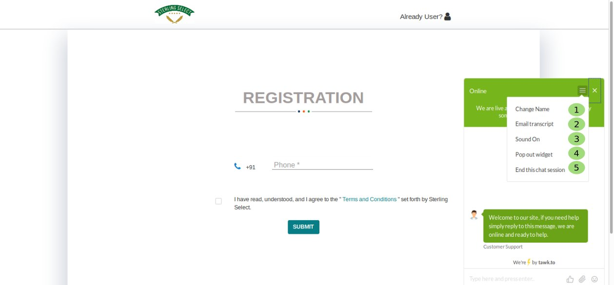

How to customise Your Chat¶

Fig. 13 Customise your chat pannel
Here you can customise your chat options.
- To change name.
- To Emailtranscript.
- You can on or off chat sound.
- To popout Widget it will take you to bigger chat field where you can read you entire conversation very comfortably.
- You will be able to end your chat session by clicking on End This Chat Session.